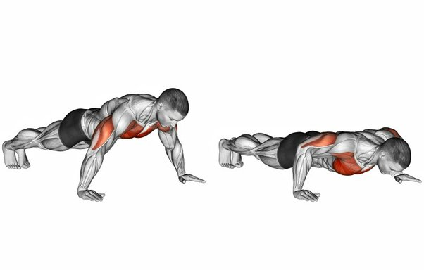
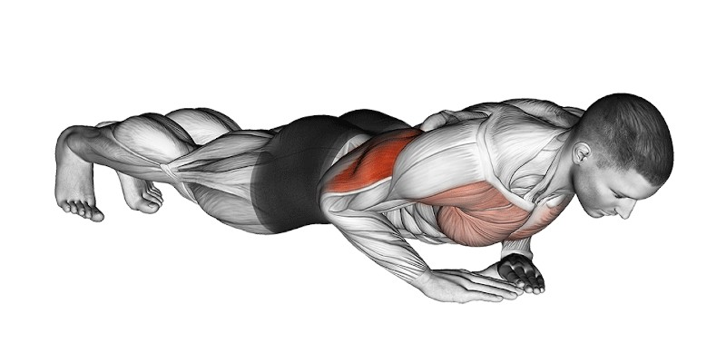

CHEST WORKOUTS
Push ups

- Get down on the floor, placing your hands slightly wider than your shoulders.
- Straighten your arms and legs.Tighten your core muscle.
- Lean forward,put pressure on to chest muscle.
- Lower your body until your chest nearly touches the floor.
- Pause, then push yourself back up.
Dimon Push ups

- Get down on the floor with your hands together under your chest.
- Position your index fingers and thumbs so they’re touching, forming a diamond shape.
- Straighten your arms and legs.Tighten your core muscle.
- Lower your body until your chest nearly touches the floor.
- Pause, then push yourself back up.
Dips

- Get into position with a bench behind you.
- Tighten your core and lower your body off the bench.
- Keep your head and upper body straig.
- Hold the dipped position for 1-2 seconds before pushing back up.
- Move yourself up and down without returning to the bench.